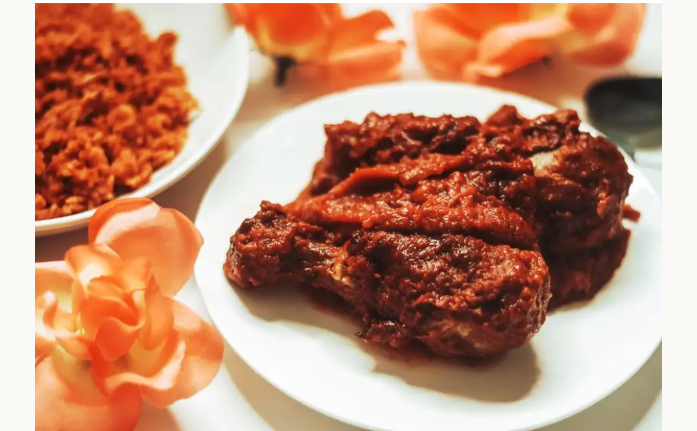
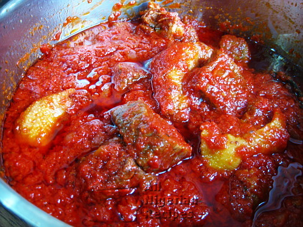

Beef and Chicken Stew Recipe


Nigerian Beef and Chicken Stew is none other than Tomato Stew with added ingredients.
Though it is called Beef & Chicken Stew, feel free to use Turkey, Fish and other forms of meat and fish for this Nigerian stew.
Nigerian Beef & Chicken Stew is usually a tricky Nigerian stew to prepare. If it is not sour or tasteless, it is burnt or too oily. Not to worry, just follow the steps below and you will learn how to make the best Nigerian Beef & Chicken Stew.
Ingredients for Nigerian Beef & Chicken Stew
- Tomato Stew
- Whole Chicken (hen)
- Beef
- Onions
- Habanero Pepper & Salt (to taste)
- Stock cubes & Thyme
You should try and match the quantities of ingredients above to the quantity of the tomato stew you want to prepare. As a guide, here are the quantities of ingredients used for the Beef & Chicken Stew as listed below:
- 1.5kg fresh Plum Tomatoes (referred to as Jos Tomatoes in Nigeria)
- 600g tinned tomato paste (or watery tinned Tomato Puree: 1.2kg)
- Vegetable Oil: a generous amount
- 1.2kg whole chicken (hen)
- 15 medium cuts of beef
- 2-3 medium onions
- Habanero Pepper & Salt (to taste)
- 3 big stock cubes
- 2 tablespoons thyme
Cooking Directions Steps
- When the tomatoes in your tomato stew are well-fried, pour out the excess oilder
- Place the pot of tomato stew back on the stove and add the chicken stock (water from cooking the chicken). There may be tiny pieces of bones at the bottom so be careful not to add those.
- Add the chilli pepper and the grilled chicken and beef
- Stir very well and add salt if necessary.
- You can also add some water at this point if the stew is too thick.
- Cover the pot and cook at medium heat till the contents of the pot is well steamed.
- Stir again and you are done.
- That's how to prepare the best Nigerian Beef & Chicken stew.
Use the beef and chicken stew to eat White Rice, Fried Plantain, Boiled Plantain, Fried Yam, Boiled yam and Agidi. Some people even add it to their Egusi Soup!
for complete guide please refer to this link click me